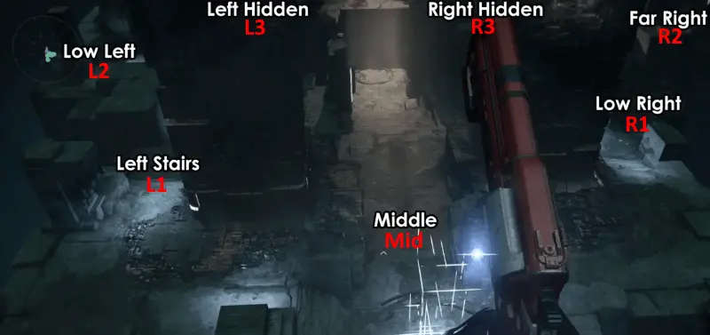
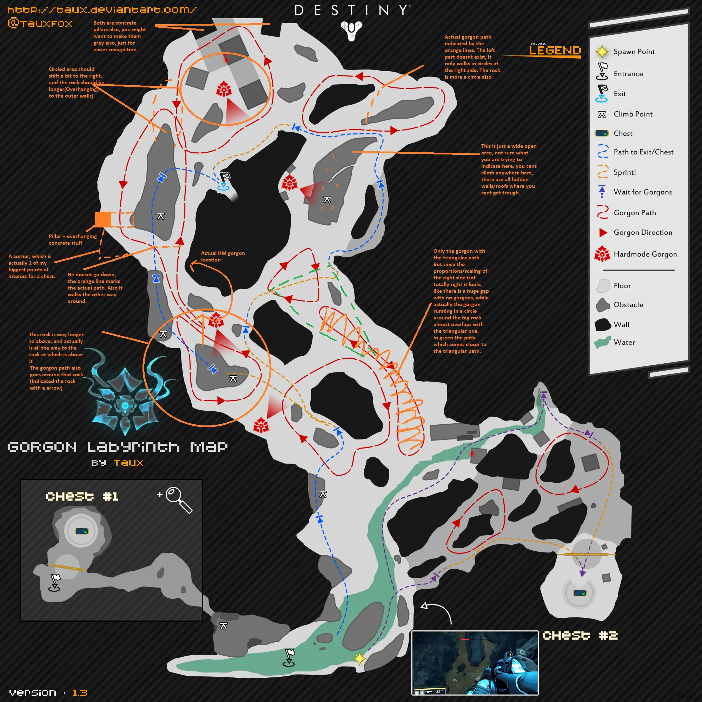
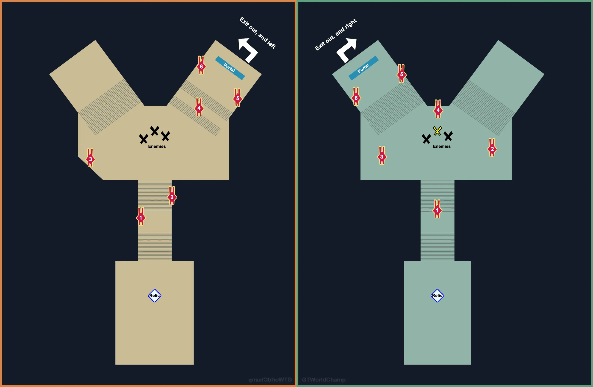
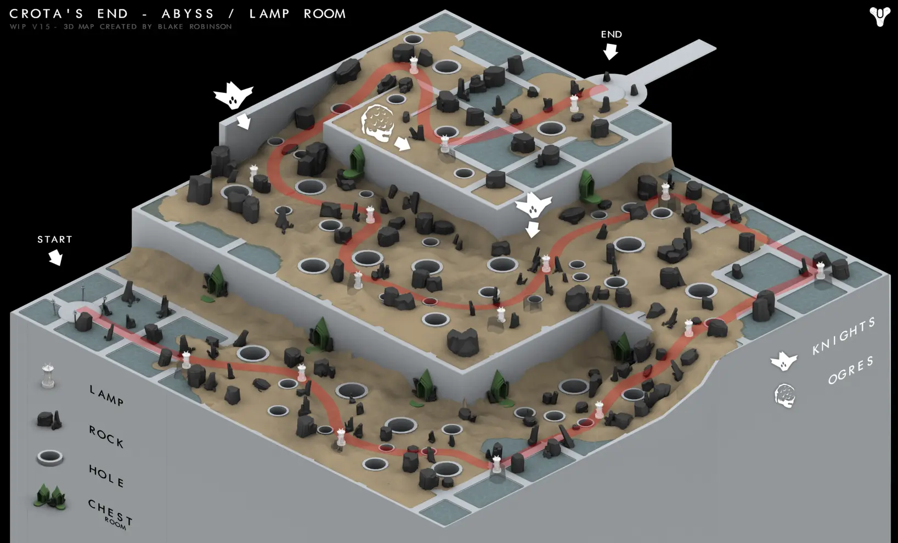

Outils #
Activité sur Destiny 1 et 2 : https://chrisfried.github.io/secret-scrubland/
Grimoire : https://destiny-grimoire.netlify.app (projet personnel)
Raids #
Luke Smith described every raid as having a unique “heartbeat” that distinguishes it from other raids. Vault of Glass is about spreading players out and then bringing them back together. Crota’s End is about creating “hero moments,” where a single player is relied upon to carry out an important task. King’s Fall is about movement and positioning. Wrath of the Machine is about action and “glorious combat.”
Checkpoint #
Tout le monde conserve un checkpoint et peut reprendre la partie au même endroit en étant chef d’équipe.
Le checkpoint est effacé lors du reset, tous les mardis à 19h. Pour conserver le checkpoint, il faut être dans le raid à ce moment-là. Seule exception : cela ne fonctionnera pas si la difficulté du raid ne peut plus être sélectionnée lors de la nouvelle semaine.
Les checkpoints sont spécifiques au personnage. On peut donc donner le checkpoint à ses autres personnages en les connectant au raid et en subissant un wipe.
Difficulté #
Le mode difficile d’un raid augmente le niveau de lumière requis, désactive la réanimation (sauf la Radiance), ajoute le modificateur Héroïque (vos ennemis apparaissent en plus grand nombre et sont plus agressifs) ainsi que des mécaniques au raid. Le mode à 390 de Lumière reprend les changements du mode difficile et ajoute des défis à certaines phases. Le raid de la semaine est joué en mode 390 avec tous les défis activés.
Nombre de joueurs #
Minimum recommandé par la communauté :
- Le Caveau de verre (Vault of Glass) : 4-5
- La Chute de Cropta (Crota’s End) : 4 (c’est le minimum pour ne pas cheese le pont)
- La Chute du roi (King’s Fall) : 5-6
- Au moins 5 pour effectuer les mécaniques normalement : Rupture: 3, Totems: 4, Warpriest: 3, Golgo: 2, Daughters: 4, Oryx: 1 Sunsinger or 4 non-Sunsingers
- Fureur mécanique (Wrath of the Machine) : 4-5
Le Caveau de verre (Vault of Glass) #
- Normal (Niveau 26)
- Difficile (Niveau 30)
- Deux oracles apparaissent à la fois (on peut être marqué pour la négation deux fois)
- Gorgones supplémentaires fixes, limitant les passages empruntables
- Atheon : lors de la TP, les joueurs toujours dans l’arène sont emprisonnées dans des bulles rouges qu’ils doivent détruire
- Lumière 390
Quêtes liées #
- Forgé sans Lumière – Etape 5 : vaincre Atheon
Stratégies pour solo/cheese #
Full Run: 2 joueurs
Entrée #
Il faut activer et protéger trois plaques simultanément. Pour activer une plaque, il faut rester dessus quelques secondes. On peut ensuite la quitter, et seuls les Praetoriens peuvent en reprendre le contrôle. Les Praetoriens ont un bouclier abyssal.
Oracles #
Position des oracles :

Le Labyrinthe aux Gorgones #
En mode difficile, des Gorgones fixes sont ajoutées (Hardmode Gorgon dans la légende).

L’invisibilité du Chasseur fonctionne.
Atheon #
Atheon téléporte 3 joueurs ; il doit donc y avoir au moins un joueur supplémentaire pour ouvrir les portails. Pour faire le boss à 3 ou moins, il faut un Arcaniste qui tombe dans le vide avant qu’Athéon téléporte puis se self-res.
Un groupe de trois joueurs est téléporté dans Mars ou Vénus et doit détruire six Oracles qui apparaissent toujours dans le même ordre. Un des joueurs doit prendre la relique et s’occuper de combattre les ennemis normaux tout en purifiant ses alliés qui se chargent en priorité des Oracles. Si l’écran de quelqu’un devient noir, il faut le purifier rapidement. Si le porteur de relique meurt, quelqu’un d’autre doit la récupérer dans les 5 secondes pour éviter le wipe.

Les joueurs toujours dans l’arène doivent ouvrir le portail de Mars ou Vénus avec la plaque de synchronisation. Ils doivent se défendre contre les Supplicants qui explosent au contact. Pour cela, il est efficace de se poster sur un pilier pour éviter le contact, et d’utiliser des grenades (surtout lorsque le buff est actif) puisque les Supplicants se déplacent par groupes de 3.
Lorsque tous les Oracles sont vaincus, toute l’escouade gagne un buff pendant 30 secondes augmentant considérablement les dégâts sur Atheon et rechargeant rapidement les grenades et les Supers. Ainsi, le bouclier de la relique peut être utilisé en permanence durant cette phase.
Au bout de 7 minutes de combat, un avertissement s’affiche, et au bout de 8 minutes, Atheon devient enragé : il attaque plus fréquemment et davantage d’ennemis apparaissent.
La Chute de Cropta (Crota’s End) #
- Normal (Niveau 30)
- Difficile (Niveau 33)
- The Shriekers in the long hallway after the Bridge respawn quickly.
- During the Deathsinger encounter, the Liturgy of Ruin comes 1 minute quicker.
- A Gatekeeper spawns with the Swordbearer during the Crota encounter.
- During the Crota encounter, when a pair of Boomers are killed, a Wizard spawns instead of a Cleaver Knight.
- Crota enrages when he reaches low health.
- Lumière 390
Stratégies pour solo/cheese #
Full Run: 1 joueur
Abysse #

La Chute du roi (King’s Fall) #
- Normal (290)
- Difficile (310)
- 390
Quêtes liées #
- La Chute du roi approche – Etape 2 : vaincre le Prêtre de guerre, Golgoroth, et Oryx
- L’appétit ancestral – Etape 1 : obtenir la Lame de la famine (Prêtre de guerre), le Voile d’Ir Anûk (Prêtresses), et le Cœur affamé (Oryx)
Stratégies pour solo/cheese #
Full Run: 4 joueurs
Fureur mécanique (Wrath of the Machine) #
- Normal (370)
- Difficile (380)
- Mode 390 : remplace le 380 ; uniquement accessible lorsque c’est le raid de la semaine.
Quêtes liées #
- Fureur mécanique – Etape 1 : vaincre l’Archiprêtre, l’Engin de siège, et Aksis
Stratégies pour solo/cheese #
Full Run: 2 joueurs
- Opening: 1
- Vosik: 2
- Siege Engine: 2 / 1 (It is impossible to solo Siege Engine on Normal mode according to all currently know strategies. However, it is possible on Hard due to the extended timer. As of now this has only been done with a macro, however.)
- Aksis1: 1
- Aksis2: 1 / 2
Equipement #
Equipements de niveau 400 :
- colis de réputation de faction, de l’Avant-garde et de l’Epreuve
- matchs de l’Epreuve (loot légendaire)
- contrats d’Elite de la semaine
Patrouilles #
Cuirassé #
Runes #
| Runes d’invocation | Chargée par | Source |
|---|---|---|
| Rune réciproque | Déjà chargée | Quêtes, coffres du Cuirassé, Eris Morn au rang 5 |
| Rune volée | 3 runes réciproques | Invocations de runes réciproques, coffres du Cuirassé, Eris Morn au rang 5 |
| Rune désuète | 3 runes volées | Invocations de runes volées, Nuit noire de la semaine, colis de réputation d’Eris Morn, raid de la Chute du roi, quête de L’appétit ancestral |
Autres runes :
-
Rune des charmeurs de vers : drop des Chevaliers et des Sorcières dans le Cuirassé. Utilisé à la bonne position dans la zone de départ du Cuirassé pour faire apparaître un Ogre qui drop la Wormfeeder Rune
-
Wormfeeder Rune : se transforme en l’une des 9 clés après avoir été chargée en tuant 50 ennemis sans mourir.
-
Rune des agonarques : se charge en tuant 7 Corrompus cachés qui apparaissent lorsque l’on se tient sous une boule blanche dans le Cuirassé. La position de la boule change en fonction du jour de la semaine, et il faut donc au moins 7 jours pour tuer assez de Corrompus. La rune s’obtient d’ailleurs par ces Corrompus cachés. La rune chargée permet de lancer un événement public sans limite de temps dans The Founts.
PNJs #
Xûr #
Présent à un endroit aléatoire de la Tour ou du Récif du vendredi 11h au dimanche 11h.